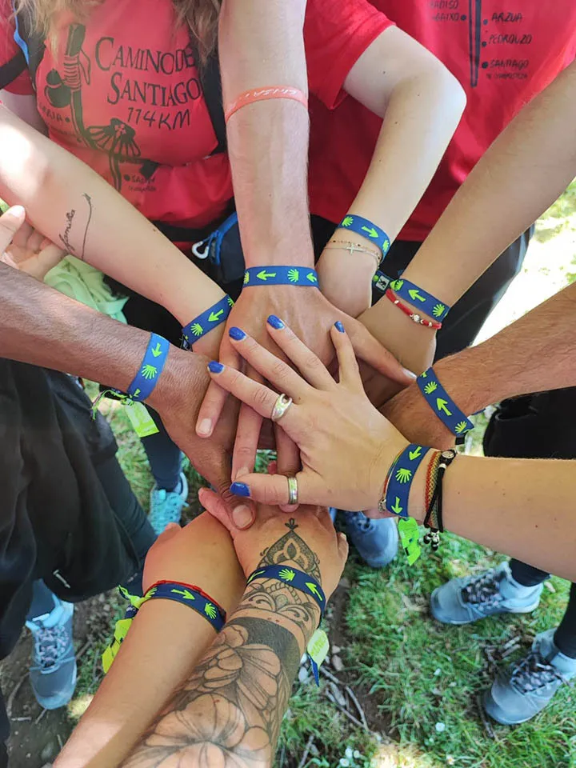

<ion-content>
  <div class="container">
    <header class="justify-content-center justify-content-md-between">
      <div class="col-md-3 mb-2 mb-md-0">
        <a href="/" class="header-img-logo link-body-emphasis">
          
        </a>
      </div>
    </header>
  </div>

  <section class="text-center text-lg-start">
    <div class="container py-4">
      <div class="row g-0 align-items-center justify-content-center">
        <div class="col-lg-6 mb-5 mb-lg-0">
          <!-- Login compoenent -->
          <app-login-component></app-login-component>
        </div>
        <div class="d-flex justify-content-center col-lg-6 mb-5 mb-lg-0">
          
        </div>
      </div>
    </div>
  </section>

  <div class="container">
    <footer class="py-3 my-4">
      <ul class="nav justify-content-center border-bottom pb-3 mb-3">
        <li class="nav-item"><a href="#" class="nav-link px-2 text-body-secondary">Home</a></li>
        <li class="nav-item"><a href="#" class="nav-link px-2 text-body-secondary">Features</a></li>
        <li class="nav-item"><a href="#" class="nav-link px-2 text-body-secondary">Pricing</a></li>
        <li class="nav-item"><a href="#" class="nav-link px-2 text-body-secondary">FAQs</a></li>
        <li class="nav-item"><a href="#" class="nav-link px-2 text-body-secondary">About</a></li>
      </ul>

      <ul class="nav rrss-container">
        <li class=""><a class="rrss-icon" href="https://www.twitter.com/fundsalcom"><i class="fa fa-twitter"></i></a></li>
        <li class=""><a class="rrss-icon" href="https://www.instagram.com/fundsalcom/"><i class="fa fa-instagram"></i></a></li>
        <li class=""><a class="rrss-icon" href="https://www.facebook.com/fundsalcom"><i class="fa fa-facebook"></i></a></li>
        <li class=""><a class="rrss-icon" href="https://www.linkedin.com/company/fundacion-salud-y-comunidad"><i class="fa fa-linkedin"></i></a></li>
        <li class=""><a class="rrss-icon" href="https://www.youtube.com/user/fsyc"><i class="fa fa-youtube"></i></a></li>
      </ul>
      <p class="text-center text-body-secondary">&copy; 2023 Fundación Salud y Comunidad </p>
    </footer>
  </div>
</ion-content>
